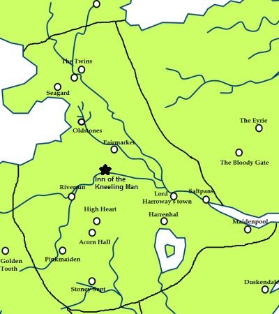

Inn of the Kneeling Man
The Inn of the Kneeling Man is an inn that is located near the spot where King Torrhen Stark bent the knee to Aegon I. The main building sits along the shore where the Trident bends. It has long, low wings that stretch out. The lower story is made of grey stone, the upper one of whitewashed wood. Its roof is slate and has a stables and an arbor. It reportedly brewed a good ale. Above its door is a painted sign of a king on his knees.
Map on Next page.
